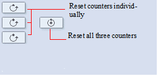

Эта вкладка отображает различные операционные счетчики с их текущими показаниями. Существует два типа операционных счетчиков. Один тип остается действительным до сброса на «0» с помощью кнопки сброса, а другой всегда остается действительным.

Все три счетчика могут быть сброшены до «0» отдельно или вместе, нажав соответствующую кнопку с правой стороны.
Следующие параметры являются неизменными и не могут быть сброшены:
Нажатие «Печать» печатает операционные счетчики, показанные в настоящее время. Появляется окно печати настроенного принтера.
Эта вкладка отображает файл журнала, в котором записаны все события регистратора. Файл журнала создается и сохраняется каждый день для каждого устройства. Файл журнала можно просматривать, отправлять в виде вложения по электронной почте или распечатывать.
Если вы включите эту опцию, в дополнение к файлу журнала будет создано резюме файла журнала. Это резюме отображает общее количество ошибок, частоту ошибок и т.д.
Если включена «Сводка», окно отображается после нажатия «Просмотр», «Печать», «Отправить» или «Сохранить как». В этом окне вы можете объединить файлы журналов предыдущих дней (максимум). 20 дней) для формирования одного файла журнала.
Если «Сводка» не включена, окно отображается после нажатия «Отправить» или «Сохранить как». В этом окне вы можете объединить файлы журнала предыдущих дней (без ограничения по времени) для формирования одного файла журнала. Чтобы отправить файл журнала по электронной почте, обратите внимание, что файл журнала не может быть больше максимального размера вложения электронной почты.
Отображаются тексты ошибок пользователя.
Отображаются тексты ошибок исследований и разработок.
Другие детали из файла журнала компилируются в списке и отображаются.
Нажатие «View» загружает текущий файл журнала рекордера на компьютер GUI и отображает его. Смотрите также раздел Резюме.
Нажатие «Печать» печатает резюме файла журнала. Появляется окно печати настроенного принтера. Смотрите также раздел Резюме.
Нажатие «Отправить...» загружает текущий файл журнала или резюме с регистратора на компьютер GUI. Появляется диалог, в котором вы можете ввести адрес электронной почты, на который будет отправлен файл журнала или резюме, и адрес того, кто отправил электронное письмо. Действительный адрес электронной почты должен быть введен в обоих этих ящиках.
Отправляется либо резюме, либо файл журнала, в зависимости от того, включена или отключена «Сводка». Смотрите также раздел Резюме.
Соответствующее сообщение отображается, если хост SMTP не введен. Когда вы подтверждаете это сообщение «ОК», во вкладке появляется строка для входа в хост SMTP.
Нажмите «Сохранить как» для отображения диалога для сохранения файла журнала. Вы можете хранить файл журнала в структуре каталога на своем ПК. Смотрите также раздел Резюме.
На этой вкладке показаны измеренные значения в лазерной повозке, задней плоскости и точке росы.
Соответствующее сообщение отображается, если измеренные данные превышают рабочий диапазон.
Эти вкладки показывают ключевые данные лазерного модуля.
На этой вкладке показан серийный номер лазерного модуля.
Нажмите эту кнопку, чтобы отобразить вкладку «Характеристики».
На этой вкладке показаны ключевые данные выбранного лазерного модуля.
Нажмите эту кнопку, чтобы вернуться к вкладке «Выбор модуля».
Нажмите эту кнопку, чтобы отобразить вкладку «Лазерные диоды».
Эта вкладка отображает лазерные диоды лазерного модуля в виде линий в области визуализации.
Зеленая линия = лазерный диод в порядке.
Красная линия = лазерный диод неисправен.
Нажмите эту кнопку, чтобы вернуться к вкладке «Характеристики».
Для выбранного материала эта коробка отображает использование материала (m2), количество разработанных пластин (pcs) и количество ударов (pcs).
Copyright © 2016 Heidelberger Druckmaschinen AG